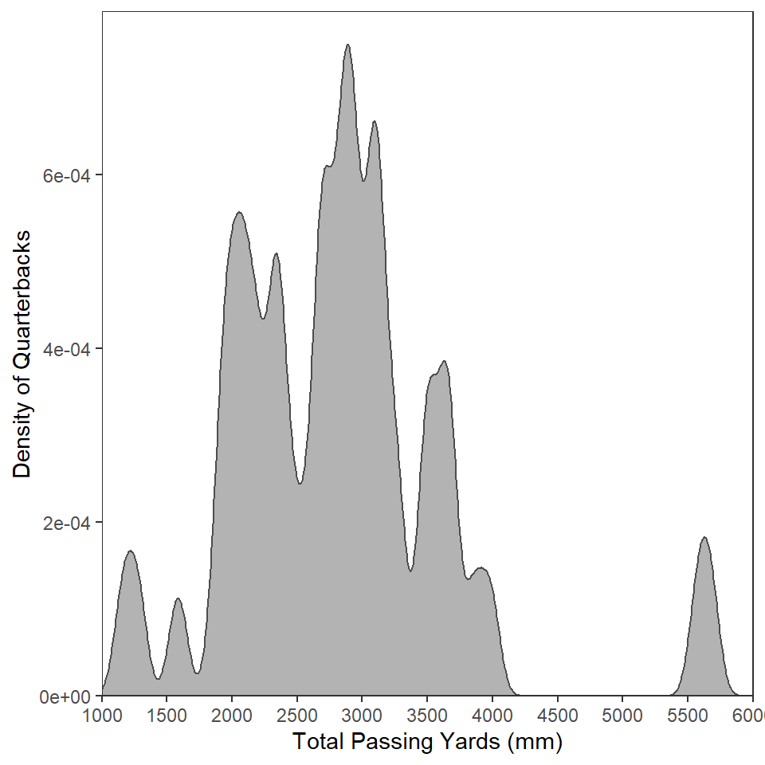

Background
 This is the same data set introduced here (which included code for accessing the data). If you did those exercises, then you can use the same data and package (e.g.,
This is the same data set introduced here (which included code for accessing the data). If you did those exercises, then you can use the same data and package (e.g., ggplot2 or tidyverse) loading portion of your script.
Total Passing Yards 1
Construct ggplot2 code to match the graph below (as closely as you can).
“Play with” binwidth= in geom_histogram() to feel how this changes the plot. What value do you prefer?
Total Passing Yards 2
Construct ggplot2 code to match the graph below (as closely as you can). [HINT: Copy your code from above and then modify.]

“Play with” adjust= in geom_density() to feel how this changes the plot. What value do you prefer?
Total Passing Yards 3
Construct ggplot2 code to match the graph below (as closely as you can … you don’t have to match my colors, but do use other than the default colors).
Total Passing Yards 4
Construct ggplot2 code to match the graph below (as closely as you can).
Total Passing Yards 5
Construct ggplot2 code to match the graph below (as closely as you can). [HINT: Copy your code from above and then modify.]
Total Passing Yards 6
Construct ggplot2 code to match the graph below (as closely as you can … you don’t have to match my colors, but do use other than the default colors). [HINT: Copy your code from above and then modify.]
Total Passing Yards 7
Construct ggplot2 code to match the graph below (as closely as you can). [HINT: Copy your code from above and then modify.]
This plot can also1 be produced from your “Quarterbacks Total Passing Yards 6” plot with the addition of one more line of code. Perform an internet search to see if you can find this method for flipping the coordinates.
Footnotes
Assuming that you did not do it this easier way the first time.↩︎